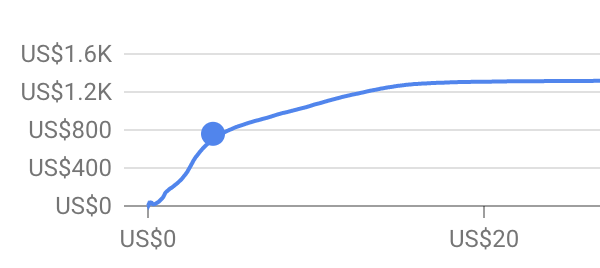

Marketing Budget Allocation via Linear Programming.
May 28, 2021
An article by Sergey Matrosov
Budget allocation is definitely a real headache for marketing. First of all, it is about attribution models, which try to represent as accurately as possible the real contribution of each marketing channel in terms of converting customers. Secondly, a business may require a spend that is more (or no less) than some amount of money on the channel which is not considered as being a very good performer. Thirdly, relations between costs and conversions are mostly nonlinear due to ads, auctions and channels’ volume. Each extra dollar usually makes less of a contribution to conversion. Fourthly, there is always a margin of error in our expectations; there is a range of possible outcomes, and each of these has its own probability etc.
But still, the goal is always to make an optimal decision right here, right now, understanding the contribution made by each marketing channel, using the attribution model and constraints (by environment and circumstances). That is why advanced analytical methods of operation research can be useful here. We will take a closer look at one of such methods, namely linear programming (the most basic one).
Operation research is an analytical method of problem-solving, using math. Linear programming is a basic [1] method, which is about maximizing (or minimizing) certain functions. Speaking about budget allocation, we want to maximize conversion, a function of channel mix, where each channel has its own value of attribution to conversion. Like this: conversions = coef1*A + coef2*B, there are A and B channels.
But is linear programming the right tool here? Is the relationship between costs and conversions actually nonlinear, greatly displayed by the Gompertz function (a modification of the Sigmoid function)? If you used Keyplanner via Google Ads, you would see curves reflecting clicks vs. conversions, CPC vs. clicks, etc.

Yes, it is the right tool, but there are two factors:
- A yearly budget is not something that is increased that dramatically unless you are a successfully growing startup.
- In a short time period (month/quarter), we can consider the behaviour of this relationship to be linear.
Let’s take a look at a simple example: you have a budget of 10k$ and only two channels – Search and Display. There is no multi-channel funnel: each channel gives a non-intersecting audience. Using a simple last-click attribution model, the Search yields 125 conversions, CAC – 5$; Display – 200 conversions, CAC – 8$ [2]. You are asked to continue showing ads on Display as much as possible (possible reasons will be discussed at the end), but using another modified targeting tool to test it, you agree to spend not less than 6k$ in order to get some significant results. Our goal is to maximize conversions within a given budget. We need to get as much as we can [3].
CAC = 5$ of Search means that the conversion value of each dollar equals ⅕. Every 5 dollars gives you a conversion. For Display with its CAC = 8$, it is ⅛.
So, the task is to maximize this function as:
⅕ * Search + ⅛ * Display -> max.
What are the constraints?
- Budget: Search + Display budgets must be equal or less than 10k$:
Search + Display <= 10.000 - Display must spend at least 6k$:
Display >= 6.000 - The search budget must have a positive value but not more than 10k:
0 <= Search <= 10000 - Display budgets must have a positive value too but not more than 10k:
Display >= 10.000 (Don’t forget that it must be more than 6k too.)
Graphical solution. Display is for X, and Search is for Y:
- From the constraints – the maximum budget on Search or Display and positive values – we get this kind of display:

- Second constraint: Display >= 6.000. Draw a line through a dot (6000, 0) that is perpendicular to OY.

Here, we get a triangle with a continuous number of possible solutions:

All dots within the triangle as well as on its edges will satisfy the constraints. The goal is to find the optimal solution among these, which can give us the maximum result.
- Now it’s time to find the maximum value of our function, which we need to maximize (turquoise colour). Firstly, assume that we are going to spend 6k$ on Display. We get 6000/8 = 750 conversions (value). To get exactly this number of conversions by Search, we need to spend 750*5=3750$. So, our first dot will be (6000, 0), and the second one is (3750, 0). Nice, but we have underspent by 250$. Looking at CAC, we have a feeling that it would make more sense to spend on Search.

- Now we need to draw another line, just like when we put all the money on Display 10000*0,125=1250 (conversions). To get exactly this number by Search, we need to spend 1250/0.2=6250. The dots will be (10000, 0) and (0, 6250), and our new line will be parallel to the first one. But the thing is that it violates our first constraint, so it’s an impossible solution for us.

- Now we have got to our last point – (6000, 4000), which is 4000$ for Search and 6000$ for Display. This proportion of the budget will give us 1550 conversions. This is the maximum that we can get, considering all constraints.
Of course, this task is not that hard at all. It’s pretty obvious that Search gives the most. There is only one way to invest the rest of the money (4000) – reinvest in it.

By the way, the probability of finding the optimal solution by chance can be expressed as a geometric probability. As we have said, our red triangle on the right, based on constraints, represents all possible solutions. The area of the triangle is all possible solutions or outcomes = ½*4000*4000 = 8mln. But only one dot is an optimal solution, so the probability of finding the right solution by chance, like “let it be”, is 1/8mln, which means it is simply impossible. Even if we take only the length of edges (= we spend all the budget), 4000+4000+5656.85 (hypotenuse) = 13656, and 1/13656 = 0.00007. It is still impossible. This is why using constraints only is not enough. All this must be calculated using operation research methods. Yes, calculated, because not all tasks are easy like this one, and not all of them can be expressed graphically.
Numerical solution
For the sake of simplicity, we only had two channels in our example. Having three of them makes us use 3-D space, and the set of solutions will be a plane. But having four of them leads to 4-D space, and a set of solutions will be a hyperplane, so there is no way to make a graphical solution. That is why there is also a numerical solution, which we will calculate using Python. You can find full code as well as a graphical solution here.
Using SciPy Optimize

Using GEKKO

In my view, GEKKO is far more readable than SciPy and is perfectly suited to goals that need linear programming. Moreover, it also feels like dealing with nonlinear programming problems is less frustrating than with SciPy. But the choice is up to you.
That wasn’t hard at all, was it? Right, you could do it using only a pen. But the thing is that there may be a lot of constraints.
Let’s try to make the task a little bit harder. Assume that there is Search capacity, so the effective budget for it is not more than 1000$. There are also two additional channels – Paid Social, which gives one conversion on 6$ and Video – one for 10$. The Team Leads of these channels claim that they need not less than 1000$ each, so:
⅕ * Search + ⅛ * Display + ⅙ *Paid Social + 1/10* Video-> max.
Additional constraints:
- Search <= 1000$
- Paid Social >= 1000$
- Video >= 1000$
As has been stated, due to the dimension, there is no graphical solution. Here is the numerical solution:

Again, this wasn’t so hard. These examples clearly show that in our case, it is mostly about constraints because the lack of it makes all money go to the channel with the biggest coefficient. Secondly, coefficients are given by the attribution model. Different models can give different credits, which must be taken into consideration if you use several models to evaluate your results. So, what about the constraints in terms of marketing?
Constraints
First of all, let’s consider the channel’s capacity. Each additional dollar usually yields less value. Secondly, media buying is not just about the number of conversions but rather the quality of conversions and their returns. Search in our example may get us the most possible conversions, but Display, albeit costly, returns much more on each of its conversions, because the targeting is just better. That is why we are asked to promote there, using 60% of our budget, trying to balance two goals: number of conversions and return.
The third thing is that, unlike our example, nowadays, marketing often has a multi-channel funnel and uses custom attribution models (like we said earlier – Markov, Shepley, etc.), which try to evaluate the contribution to conversions. But knowing the most contributive channel doesn’t mean that we should allocate all the budget to it. If you exclude other channels, this may lead to the opposite marketing result.
Say you are selling cars. You have one outdoor ad and one salesman. The ad brings you possible clients who have a kind of interest, and the salesman makes them buy your cars. The ad’s contribution to the sale from the ad is 0.1 (it just attracts), and 0.9 comes from the salesman (sum = 1 sold car). We respect the work of the second one, but if we underestimate the function of the ad (“Hello! We are selling cars here. Yes, right here. Did you know that?”) and give it up, we will have no client flow at all. That is why we need to remember that not all channels are able to convert, but they can help to do it.
So, there is a need to understand the dynamic of coefficients, given different budgets, as well as the influence of each on all others. Say there is a dataset:
| Investment/Channel | Search | Display | |
|---|---|---|---|
| 1 | Low (2019) | 0.7 (test) | 0.3 (test) |
First row:
We tested a small budget on Search and Display. This showed that the weight, the contribution to conversion, of the first is 0.7, and the second one is 0.3 (sum = 1). This doesn’t mean that we need to spend everything on Search because Display may have an important role in user acquisition.
| Investment/Channel | Search | Display | |
|---|---|---|---|
| 1 | Low (2019) | 0.7 (test) | 0.3 (test) |
| 1 | High (2020) | 0.6 (↓) | 0.4 (↑) |
Second row:
Based on our data from the first row, we decided to allocate[4] more budget (which had itself become bigger) to Search. Surprisingly, its weight was decreased.
If you want to serve your ads optimally, you have to catch the dynamic of the channel mix, testing and getting data out of it, paying attention to each channel on its own terms. It certainly gives you the key to constraints that must be considered when allocating a budget.
We strongly recommend evaluating your own limits and trying to calculate values using linear programming. We hope our example will help you. Good luck!
[1] you want to use custom methods if you really want to be more accurate. But everything has its price - difficulty of the calculations significantly increases.
[2] Although we are only spending a short amount of time on this question (in order to focus on linear programming), you have to be aware that every attribution gives different assumptions about the credit of each channel, so you need to be sure that the chosen attribution model reflects the user’s engagement with the channel mix. Moreover, it is important to understand that sophisticated attribution models such as the Shapley Value or Markov Chain give a contribution value to conversion, which is why the sum of its coefficients must be equal to 1, like where one channel is responsible for 70% of the work to convert, and another one is responsible for 30% = 100% = 1; in our case, given simple attribution, it is not so.
[3] Of course, conversion is not always the case at all, but rather the money is. We need to focus on different things when evaluating results. But for the sake of our example, maximum conversions will be our goal.
[4] Note: allocation proportion is not equal to the channel’s weight due to possible constraints.